CS184 / 284A · FALL 2026
Homework 2: MeshEdit
Webpage: cal-cs184-student.github.io/hw2-charles-writeup/
Write-up
repository: github.com/cal-cs184-student/hw2-charles-writeup
Overview
This implementation evaluates Bezier curves and surfaces, computes area-weighted vertex normals, edits triangle connectivity with edge flips and splits, and combines those local operations into Loop subdivision. Boundary edge splitting and subdivision are also implemented as extra credit extensions.
The cube experiments show that connectivity matters even when two input meshes have the same surface: a symmetric triangulation gives a symmetric subdivided result.
Section I: Bezier Curves and Surfaces
Part 1: Bezier curves with 1D de Casteljau subdivision
Each call to evaluateStep interpolates adjacent points and returns one fewer point.
Repeating this operation five times for six control points evaluates a degree-five curve. The
implementation builds a new vector at each level, preserving the input.
The custom control points are (0.15, 0.25), (0.30, 0.80), (0.55, 0.90), (0.75, 0.15), (1.00, 0.30), and (1.25, 0.75). Below, t = 0.5. White marks the control polygon, blue marks intermediate levels, green shows the completed curve, and red marks the final evaluated point.

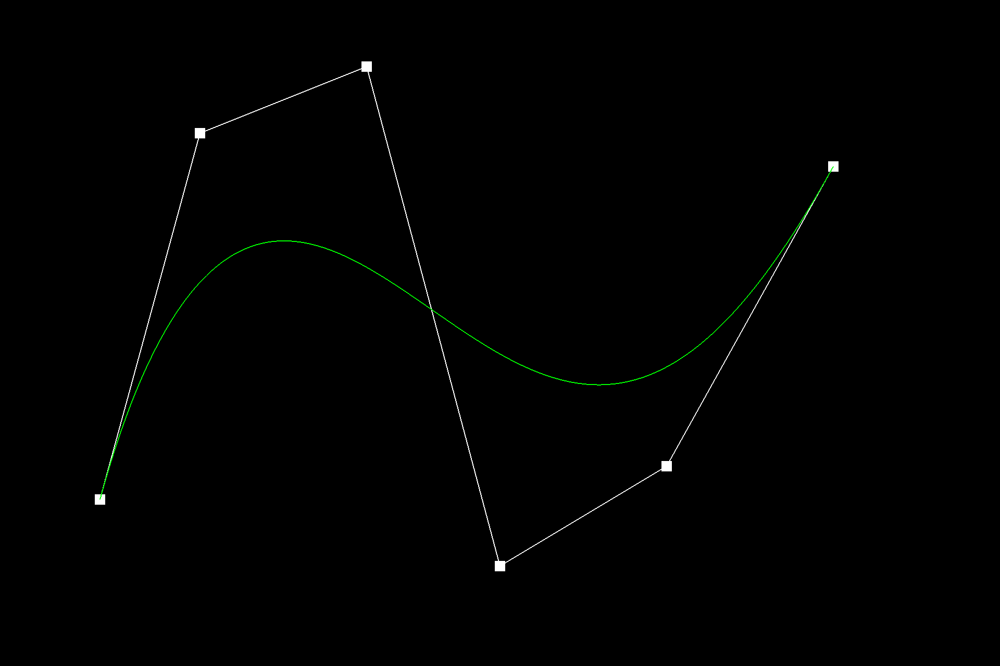

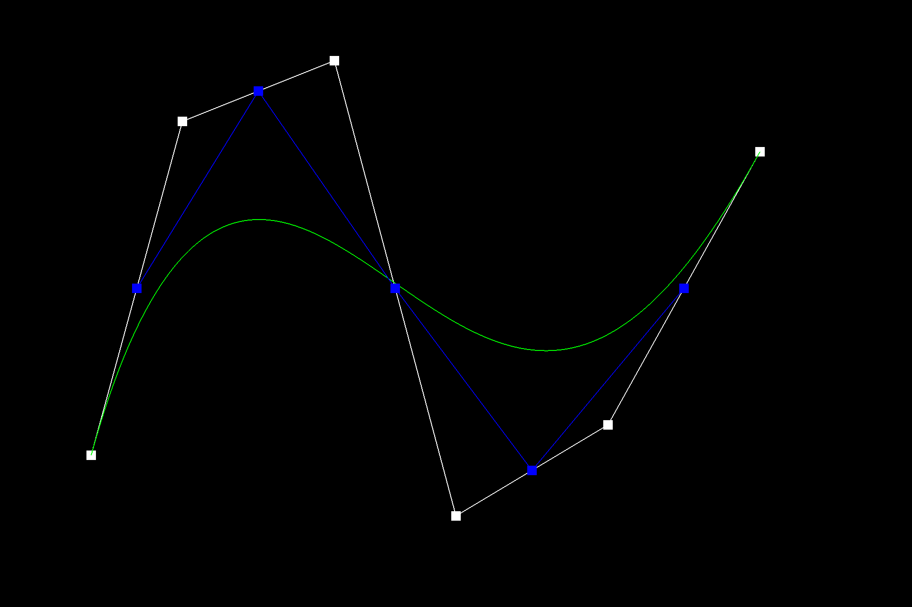

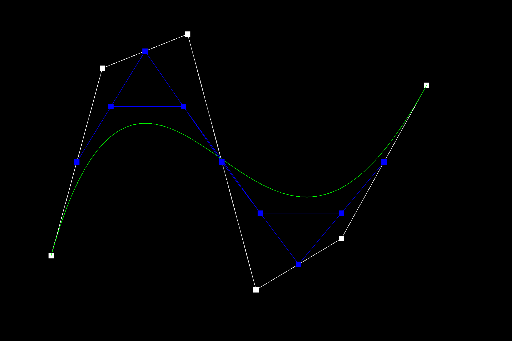


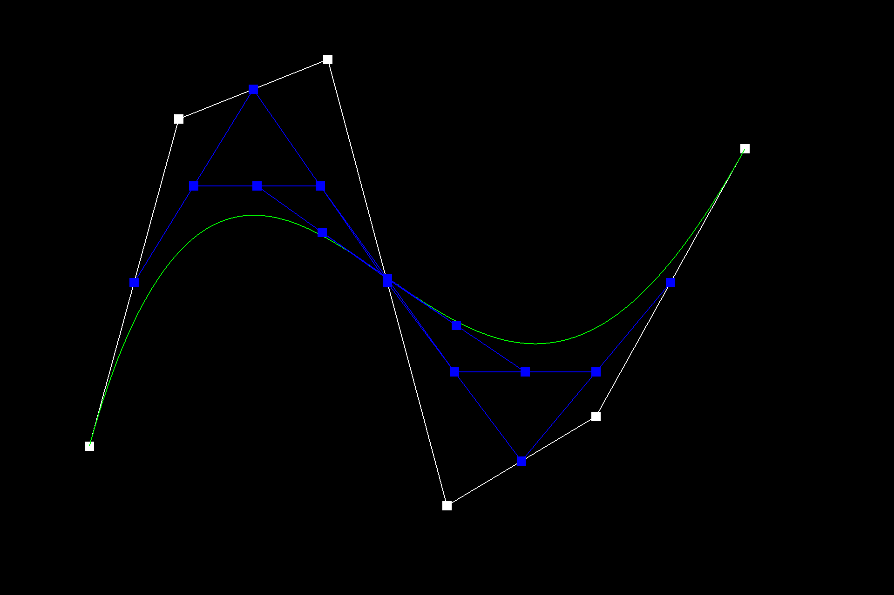

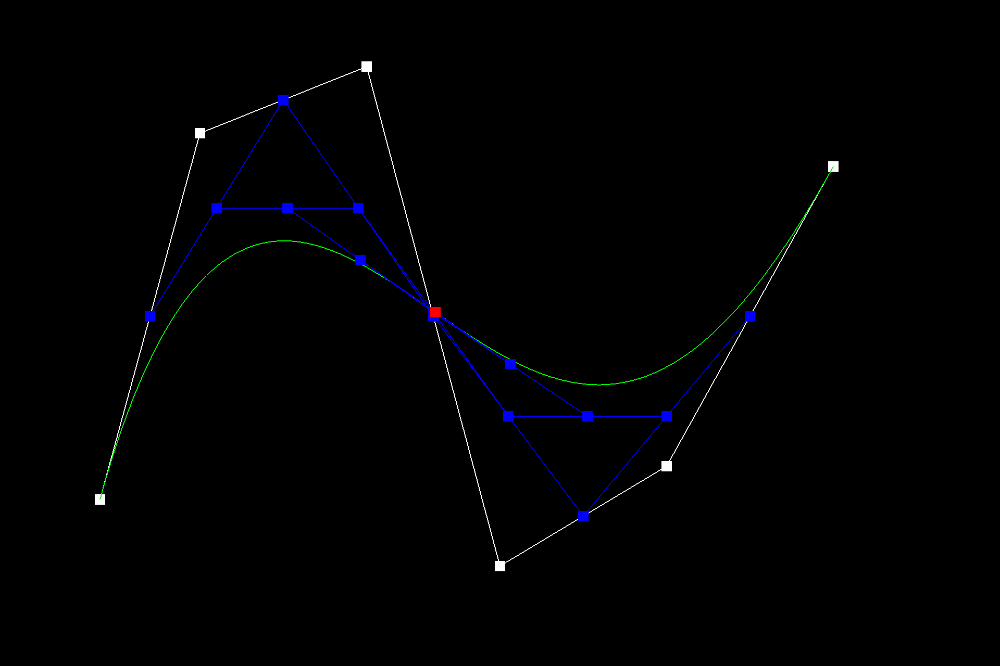
Part 1: Modified curve
Moving the second control point to (0.30, 0.65) and the fourth to (0.78, 0.30) lowers the upper bend and raises the lower bend. Changing t from 0.5 to 0.7 moves the evaluated point farther along the curve. The same interpolation code updates every intermediate level.
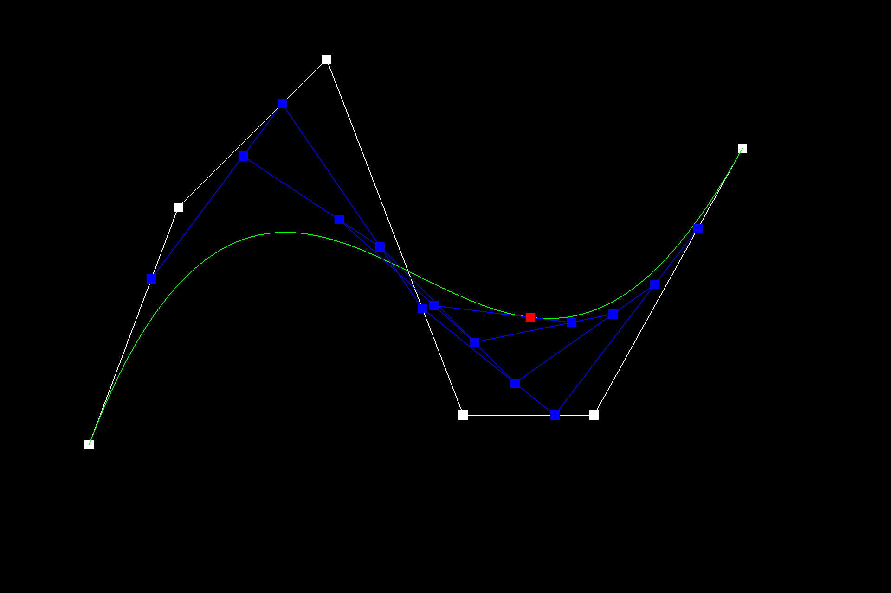
Part 2: Bezier surfaces with separable 1D de Casteljau
evaluate1D repeatedly calls the 3D interpolation step until one point remains. To evaluate a
patch at (u, v), evaluate first evaluates each row at u, then evaluates the resulting list
of row points at v. This implements a tensor-product surface using the same one-dimensional algorithm
twice.
The supplied tessellator samples each patch on a 16 × 16 grid. The screenshot below comes from bez/teapot.bez, with patch boundaries merged using the supplied loader. It is separate from the COLLADA teapot used in the mesh experiments.
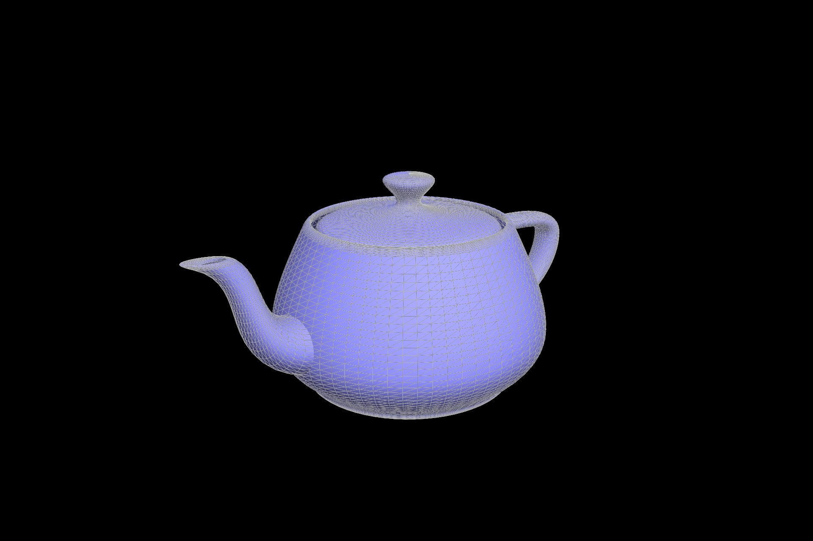
Section II: Triangle Meshes and Half-Edge Data Structure
Part 3: Area-weighted vertex normals
Starting at a vertex's half-edge, the implementation walks the incident ring using
twin()->next(). For each real triangle, it takes the cross product of two edge vectors.
Its magnitude is twice the triangle area, so summing these unnormalized cross products automatically
weights larger triangles more heavily. The sum is normalized once, after the traversal.
The winding order determines the normal's direction. Virtual boundary faces are skipped, and a zero-area sum returns a zero vector to avoid division by zero. All traversal iterators in this method are const.


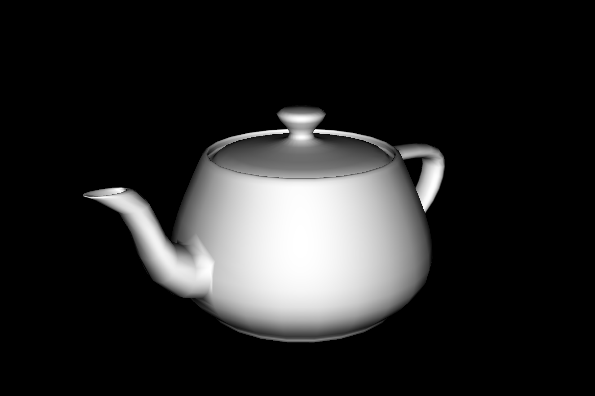
The body bands and faceted lid in the flat image become continuous shading in the smooth image. The silhouette and triangle count stay fixed: the change comes from interpolated normals, rather than added geometry. The supplied diffuse shader is used in both images, with the renderer's Q toggle changing the normals.
Part 4: Edge flip
For adjacent triangles ABC and BAD sharing AB, flipping AB replaces it with CD. The implementation gathers the six local half-edges before writing any pointers, then rewires them into CDB and DCA. It resets the representative half-edges of the four vertices, the two faces, and the shared edge. The four outside twin connections remain attached to their original edges.
| Before | After |
|---|---|
| ABC and BAD; shared edge AB | CDB and DCA; shared edge CD |
| No vertices, edges, faces, or half-edges are created or deleted. | |
Boundary edges return immediately because there is no second real triangle to exchange. A flip touches a fixed-size neighborhood, so its work is constant in the total mesh size.

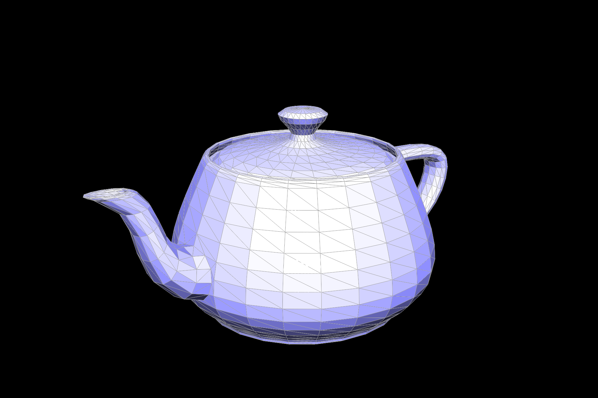

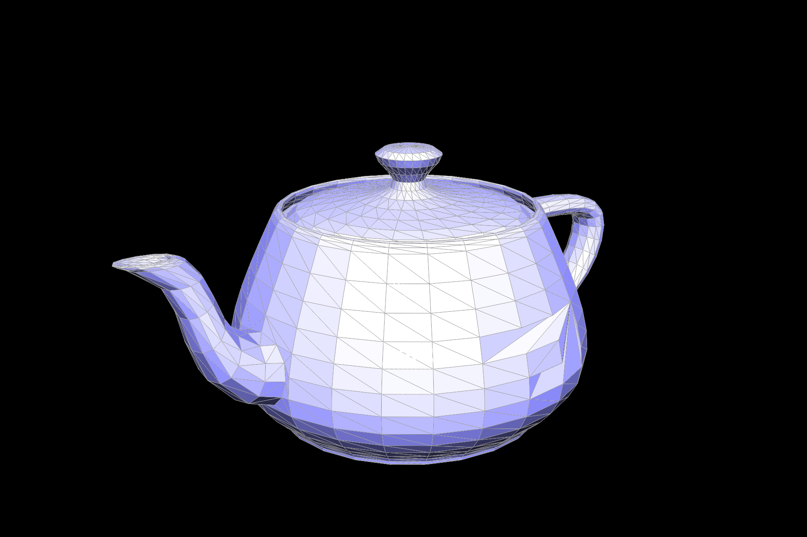

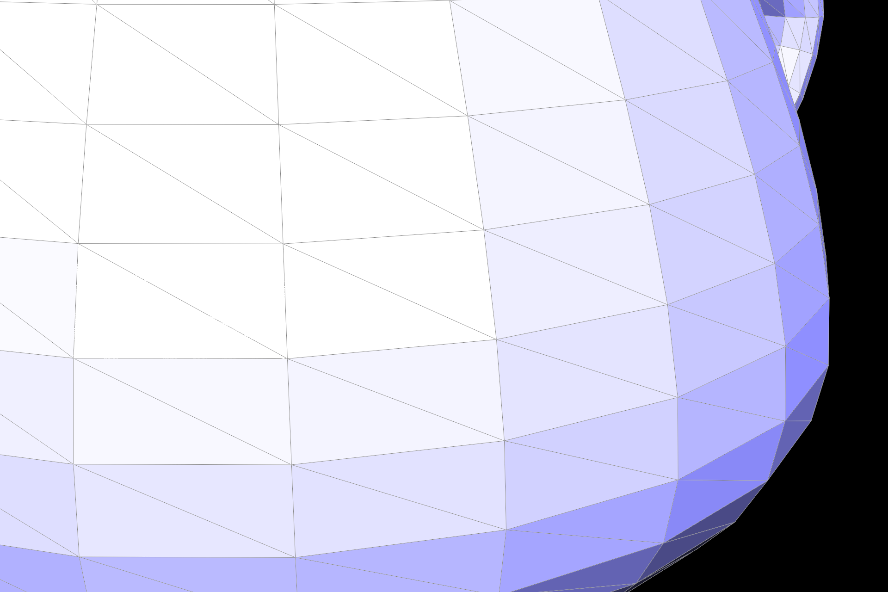

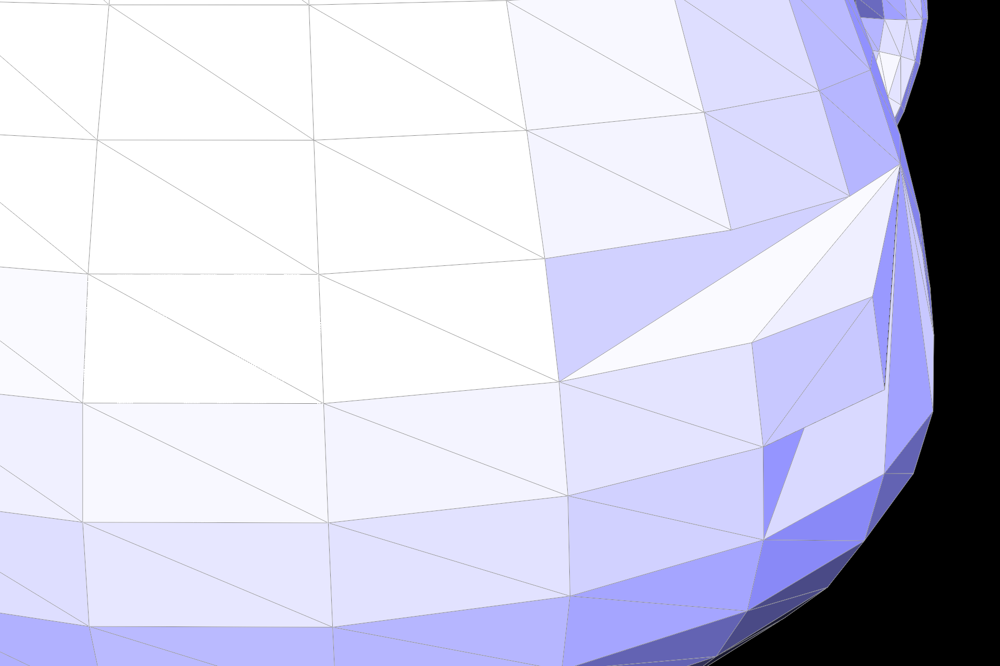
Debugging and verification
The validation harness checks twin reciprocity, edge endpoints, face cycles, and every vertex's complete incident ring. Flipping the same diagonal 30 times passes these checks after every operation and preserves all element counts. Gathering the old neighborhood first avoids accidentally following a pointer that has already been rewired.
Part 5: Edge split
An interior split inserts M at the midpoint of AB, then joins M to C and D. The two original triangles become four. The implementation allocates one vertex, three edges, six half-edges, and two faces, then explicitly sets each local half-edge's next, twin, origin, edge, and face. Face and vertex representatives are reassigned to valid outgoing half-edges.
The original edge and its second half are marked old. The spokes MC and MD are marked new. The returned vertex points along one half of AB; this makes its representative consistent with the specification and gives subdivision the right edge classification.


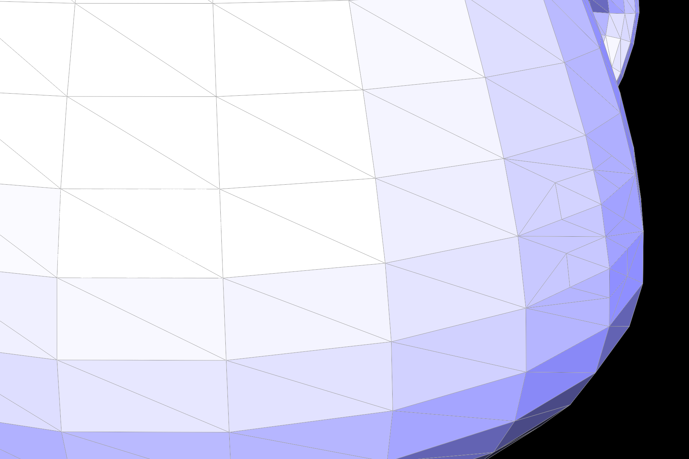
Splitting alone preserves the original triangle surfaces: each new point lies on an original edge, and each spoke lies within its original triangle. Combining splits and flips changes the triangulation; on a curved surface, replacing a diagonal can also change the piecewise planar surface locally.
Checks that expose pointer mistakes
An interior split must increase counts by ΔV = 1, ΔE = 3, ΔF = 2, and ΔH = 6. Tests verify those changes and check that the new vertex is the exact midpoint. A separate stress test interleaves 300 randomly selected valid flips and splits, validates the entire topology after each edit, and then subdivides the result.
Part 5 extra credit: Boundary edge splitting
Boundary edge splitting is implemented. A boundary edge has one real triangle and one virtual boundary face. Splitting it creates two real triangles and inserts one extra half-edge into the existing virtual loop. This adds one vertex, two edges, four half-edges, and one real face; the number of boundary components is unchanged.
The implementation chooses the real side of the edge even if the edge's representative points to the virtual side. Inserting the new boundary half-edge immediately after the old one avoids a search for the boundary predecessor, keeping the operation constant time.

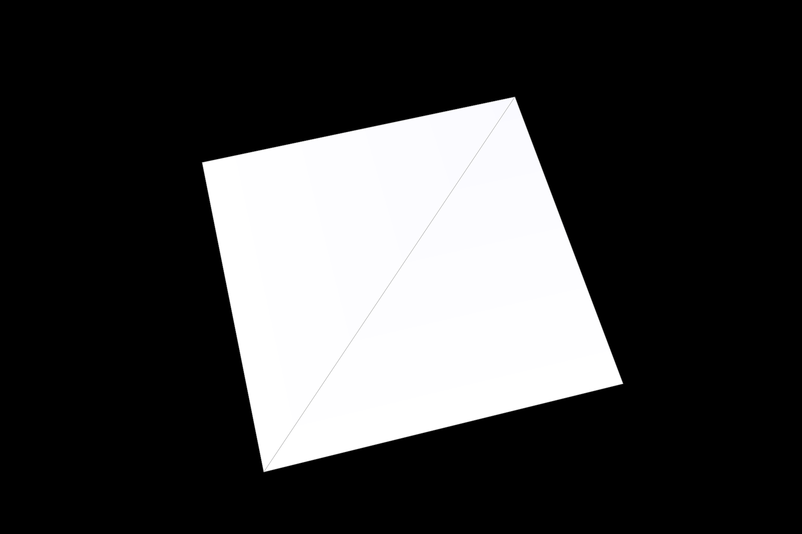

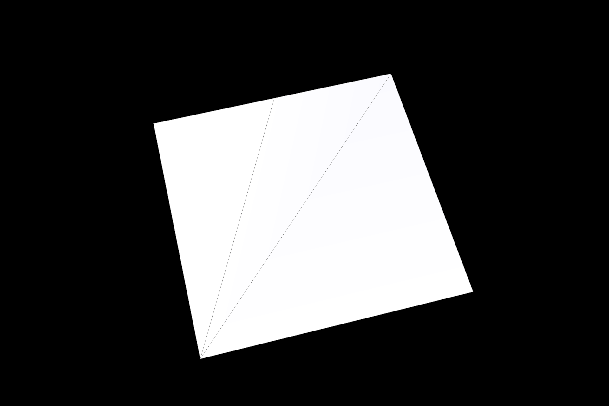
Part 6: Loop subdivision for mesh upsampling
The implementation separates computing positions from changing connectivity. First it stores updated positions for all old vertices and all original edges. It then splits a saved list of original-edge iterators, flips new spoke edges that connect an old vertex to a new vertex, and finally copies the stored positions into the mesh.
For an interior vertex of degree n, the weight β is 3/16 when n = 3, and 3/(8n) otherwise. For an interior edge AB with opposite vertices C and D, the new edge vertex uses the second equation below.
m′ = ⅜(A + B) + ⅛(C + D)
Every weight is evaluated on the original geometry. The saved edge list prevents splitting newly appended edges. Marking both halves of original edges old prevents flipping those edges during the 4-to-1 construction.

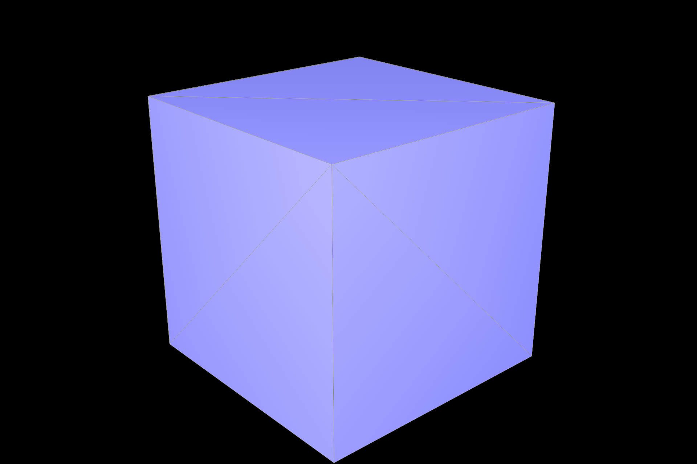

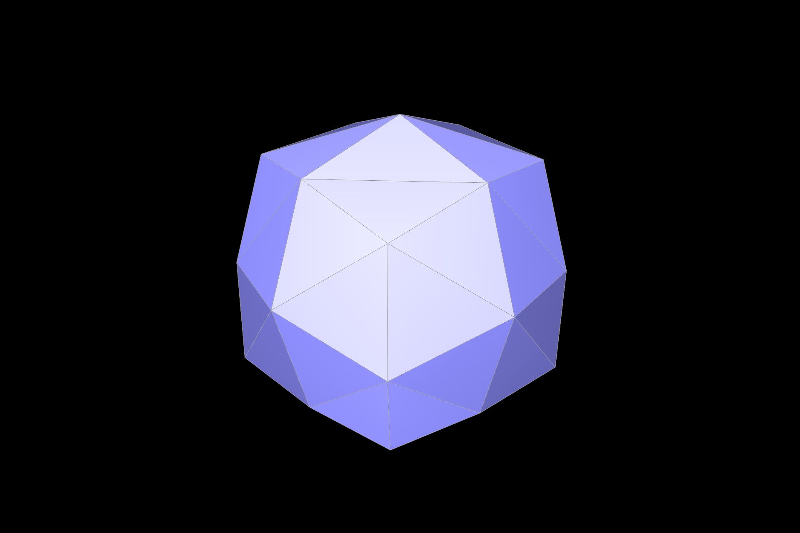

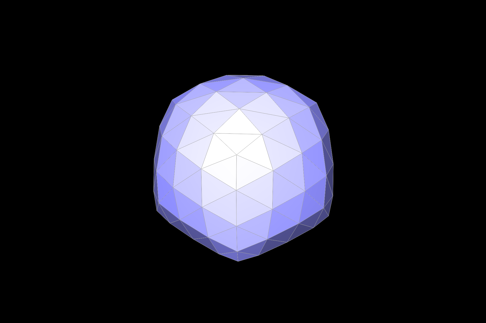

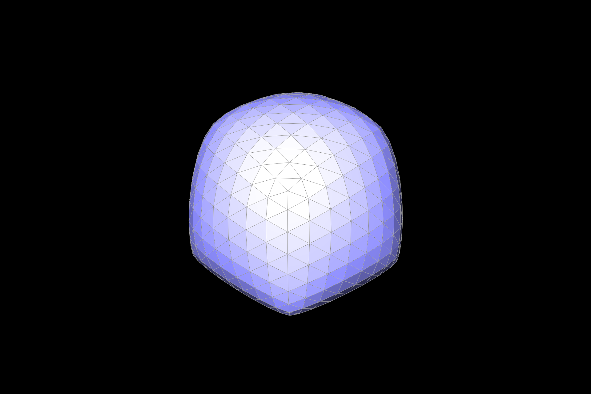
Repeated averaging rounds the sharp corners and edges, and shrinks the coarse cube. The image series uses the same camera throughout. The faceting becomes finer, but the diagonals of the original faces influence the shape and cause asymmetry.
Part 6: Making the cube subdivide symmetrically
The supplied cube triangulates each square with one diagonal. Different corners see different incident neighbors and degrees, so the Loop stencils do not respect all of the cube's reflection symmetries. Increasing the subdivision level preserves the influence of this asymmetric coarse connectivity.
Preprocessing splits the six face diagonals at their midpoints. Each square becomes four triangles around a face center. All eight cube corners now have degree six, and all six face centers have degree four. These matching neighborhoods restore the symmetry of the connectivity without changing the initial cube's surface. This preprocessing needs six splits; flips are unnecessary.

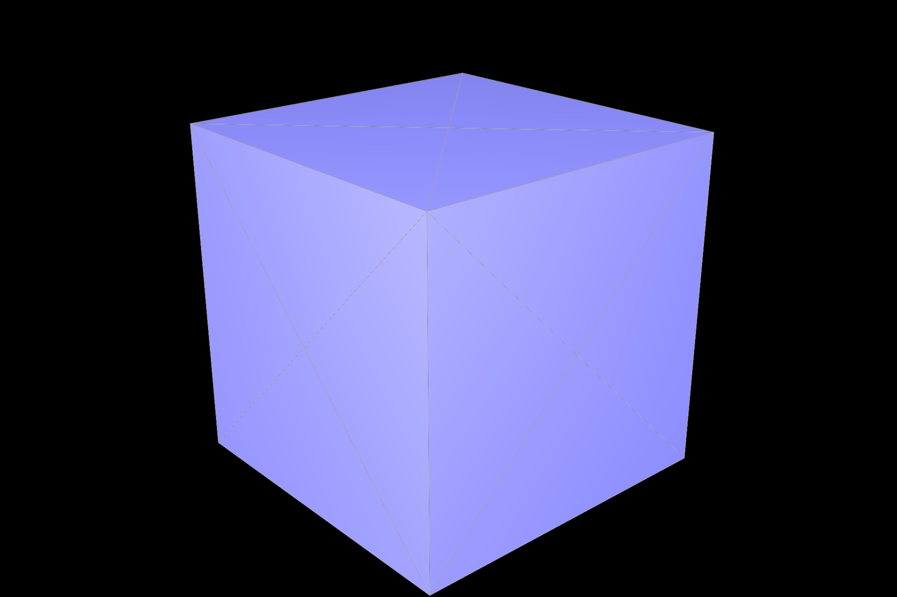

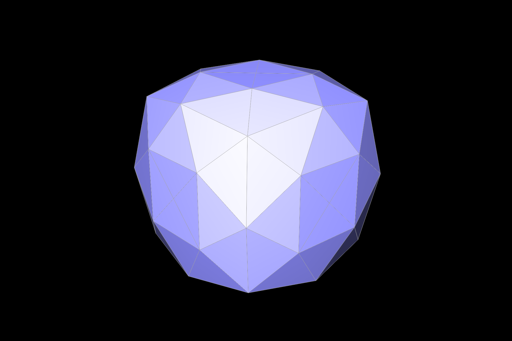

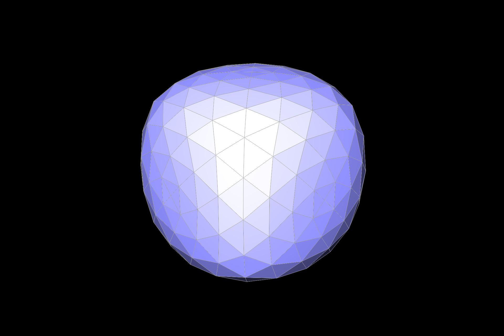

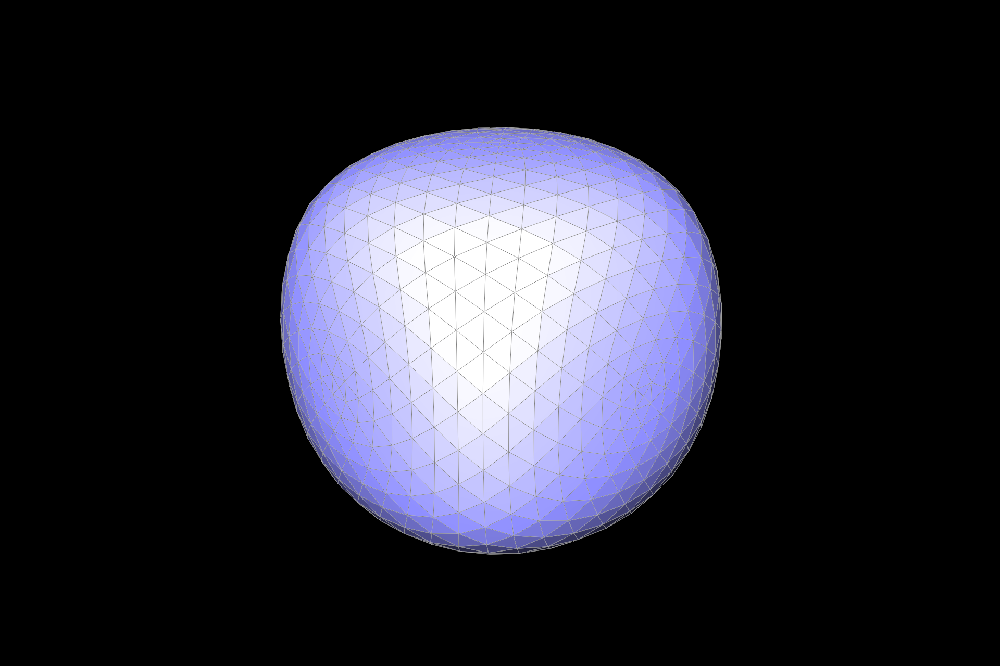
Measured reflection symmetry
For every vertex, reflect its position across each coordinate plane and find the nearest mesh vertex. The maximum of those distances is the residual below. The source cube already contains roughly 10−6 coordinate noise.
| Loop iterations | Original cube residual | Preprocessed cube residual |
|---|---|---|
| 1 | 0.414578 | 1.25 × 10−6 |
| 2 | 0.234375 | 1.16 × 10−6 |
| 3 | 0.191886 | 1.14 × 10−6 |
Part 6: Reducing rounding with pre-splitting
A separate experiment performs one linear 4-to-1 refinement before any Loop smoothing. It uses midpoint splits and the same spoke flips, while leaving original vertices fixed. This adds local samples without changing the input surface. Subsequent averaging then operates over smaller neighborhoods.

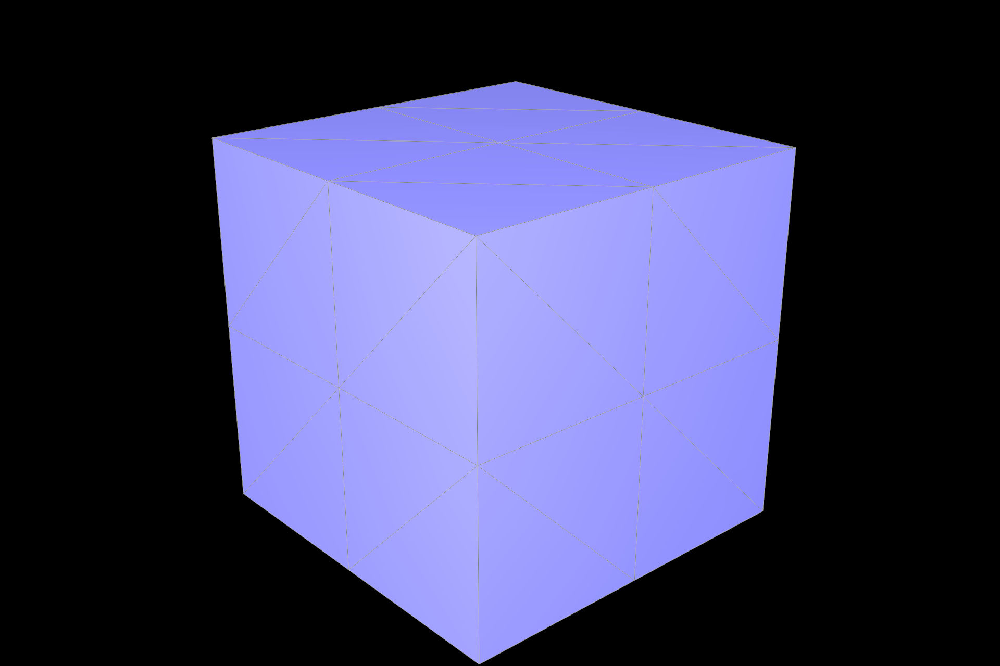

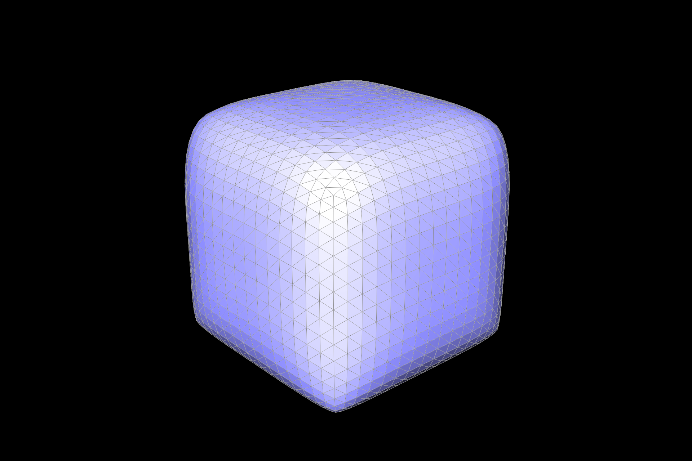
The pre-refined result retains broader flat face regions and a more boxlike silhouette. The maximum absolute coordinate after three smoothing rounds is 0.883789 for the coarse input and about 1.000000 for the pre-refined input. This comparison uses different initial resolutions; it demonstrates how a smaller stencil reduces shrinkage, rather than a change to the Loop weights. Pre-splitting reduces rounding but does not create a permanent crease.
Part 6 extra credit: Loop subdivision on meshes with boundaries
Loop subdivision on meshes with boundaries is also implemented. New boundary edge vertices use the midpoint of their endpoints. Existing boundary vertices use the two neighbors along the boundary:
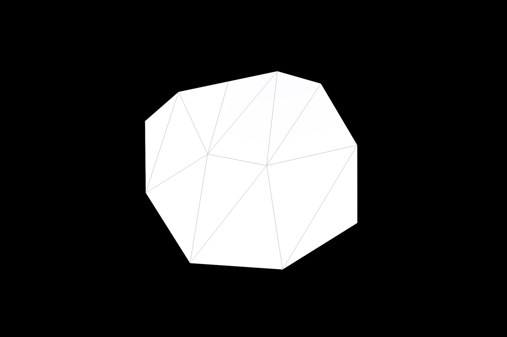